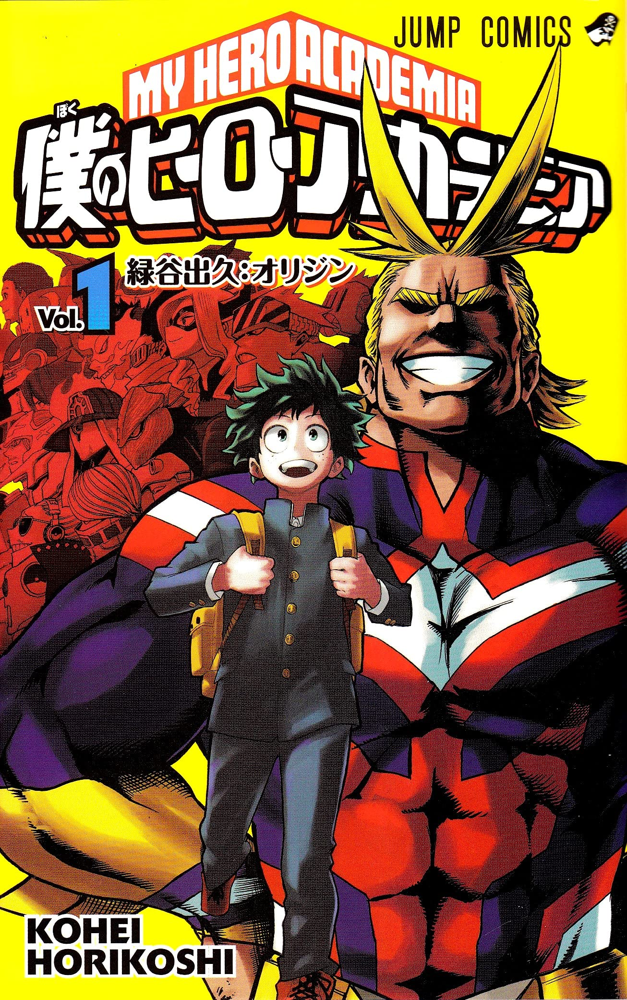
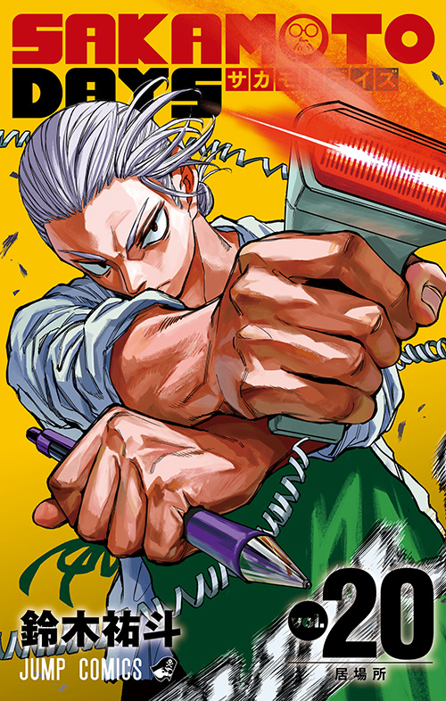
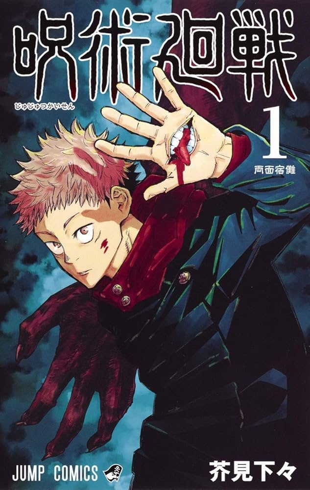
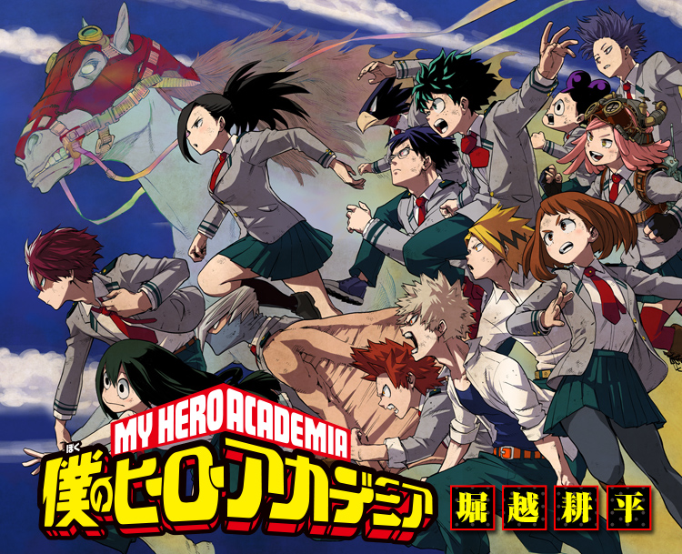
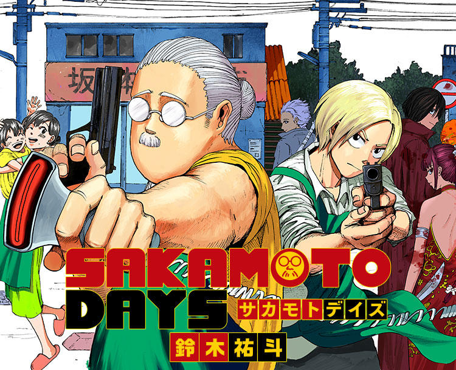
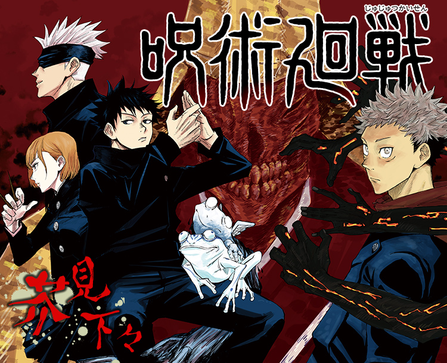

誰もが超常能力、"個性"を持つようになった世界。
"個性"を悪用する敵＜ヴィラン＞を、圧倒的な力で取り締まる
「ヒーロー」は皆の憧れの存在となっていた。
これは、”無個性"である主人公、緑谷出久が
最高のヒーローになるまでの物語。
画力にストーリー、全てが完璧な漫画。
敵＜ヴィラン＞を敵＜ヴィラン＞で終わらせず、
まさに「手を差し伸べ続ける物語」。
アニメも最終シーズンを迎え、
今最高にアツい作品。
私がこの作品で好きな言葉は
「悲しー事なんざ、
あるよりない方が良いだろ！」
アニメ公式サイト : アニメ公式Xアカウント
元・最強の殺し屋、坂本太郎（さかもとたろう）。
愛する家族を守る為、仲間と共に
迫り来る刺客と戦う、
殺し屋ソリッドアクションストーリー。
この作品の醍醐味は、なんといっても
「アクションシーン」。
作者の圧倒的な画力から出力される様々なバトルは、
「絵が動いている」とさえ感じてしまう。
アニメ第３シーズンの制作も発表され、
原作の展開も佳境を迎えている。
私がこの作品で好きな言葉は
「どんな人も、
誰かにとって大切な人なの！」
アニメ公式サイト : アニメ公式Xアカウント
少年は戦う。正しい死を求めて。
人間の負の感情から生まれる”呪霊”と、
それを呪術で祓う呪術師との戦いを描く物語。
この作品がおすすめできる理由は、
ダイナミックな展開の中にある丁寧な「心情描写」。
キャラがちゃんと生きていて、
各々が稀に吐露する過去や心境が胸に突き刺さる。
バトルシーンも一級品で、
まさしく「ジャンプ漫画」といった作品。
私がこの作品で好きな言葉は
（生きる意味を失った友に対して主人公がこぼした言葉）
「今のお前に,
"生きろ"なんて言えない。
でもお前がいないと寂しいよ。」
アニメ公式サイト : アニメ公式Xアカウント


各作品コミックスのページ